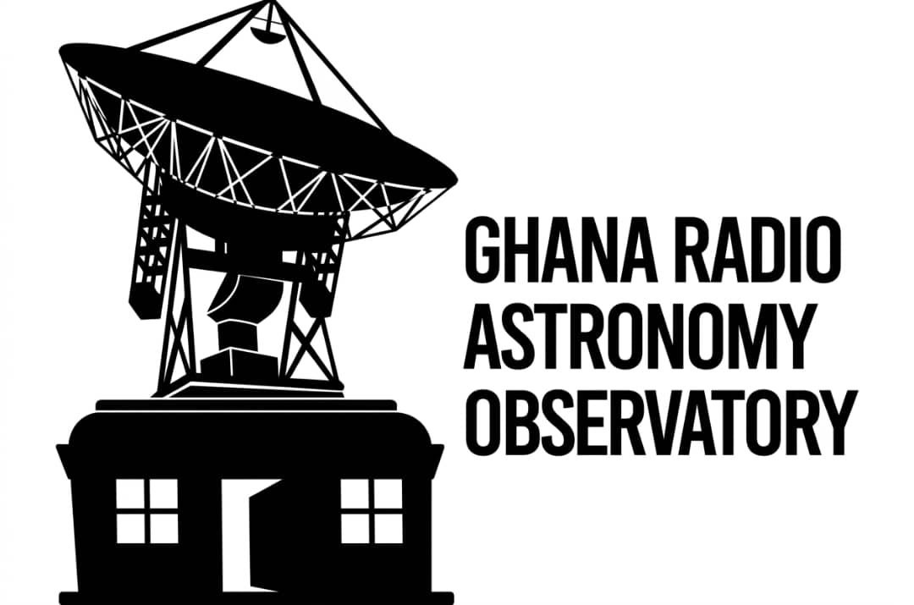

Understanding Masers
Astrophysical masers: natural cosmic microwave amplifiers.
What is a Maser?
A maser is a "Microwave Amplification by Stimulated Emission of Radiation"—a natural cosmic phenomenon where specific molecules emit intense, coherent microwave radiation. Unlike lasers that emit visible light, masers operate in the microwave region of the spectrum.
Astrophysical masers are found in diverse cosmic environments: star-forming regions, evolved stars, active galactic nuclei, and supernova remnants. They serve as crucial probes of physical conditions and dynamics in these distant, complex regions of space.
Methanol Masers at 6.7 GHz
The primary focus of Asto GH observations, methanol masers emit intense radiation at 6.7 GHz frequency and are predominantly found in star-forming regions where young, massive stars heat surrounding gas and dust.
Maser Variability & Monitoring
Masers display high brightness temperatures, narrow spectral line widths, and variable emission patterns over time. Long-term monitoring campaigns like Asto GH track these variations to understand source activity, detect rare outbursts, and probe the physical conditions in star formation zones.

About
A radio astronomy programme centred on maser science.
The project combines targeted observations, catalogue building, and cross-institution collaboration to investigate maser emission linked to star formation, compact objects, and evolving galactic environments.
Our observing strategy supports repeat measurements, calibration quality, and reproducible analysis that can be shared with researchers, students, and partner observatories.
Observing Focus
6.7 GHz methanol masers, source variability, and spectral-line monitoring.
Infrastructure
Programmes designed around the Ghana 32-metre radio telescope and partner facilities.
Open Science
Publication-ready outputs, curated observing records, and accessible data pathways.
Lead Researcher
Scientific leadership for observing strategy and data quality.

Project Lead
Dr. Benedicta Woode, PhD
Research Scientist, Radio Astronomy and Astrophysics
Ghana Space Science and Technology Institute
Dr. Woode guides target selection, observing cadence, and interpretation of maser signatures while coordinating the Asto GH team across data reduction, validation, and publication preparation.
Observing Team
Schedules observations, monitors system performance, and records session metadata.
Data Analysis Group
Processes spectra, tracks source variability, and produces quality-controlled research outputs.
Student Researchers
Support catalogue updates, visualization work, and literature integration across project cycles.
Partners
Collaborating institutions advancing radio astronomy research in Ghana and Africa.
Ghana Space Science and Technology Institute
GSSTI
National institute for advancing space science, technology research, and capacity building across Ghana's scientific community.

Development in Africa with Radio Astronomy
DARA
A collaborative programme supporting radio astronomy development, capacity building, and cross-border research initiatives across African nations.

Ghana Radio Astronomy Observatory
GRAO
Home to the 32-metre radio telescope and the centre for observational campaigns, equipment, and the primary data acquisition facility for Asto GH observations.

Square Kilometre Array Africa
SKA Africa
Pan-continental initiative developing Africa's radio astronomy capabilities through infrastructure development, training programmes, and next-generation telescope projects.
News
Project updates from observations, analysis, and community activity.
Latest Update
New observing runs added to the current maser monitoring cycle.
Recent sessions expanded the source list and improved temporal coverage for repeat detections.
Collaboration
Cross-team review sessions now support faster validation of candidate detections.
Shared review checkpoints improve confidence in line identification and publication readiness.
Outreach
Asto GH continues to connect student researchers with live astronomical data workflows.
Hands-on access to spectra and metadata supports training in modern radio astronomy practice.
Publications
Representative publication stream for the maser observing programme.
2025
Long-term monitoring of methanol maser variability across selected southern sky targets
2024
Calibration methods for single-dish maser observations at the Ghana Radio Astronomy Observatory
2023
Catalogue development for recurrent maser detections and follow-up observing priorities
Catalogue
Access observations, source records, and curated project datasets.
The project catalogue is intended to centralize source summaries, observing metadata, spectra, and derived products for researchers and collaborators.
GitHub
Code, notebooks, and analysis workflows live alongside the science output.
Asto GH Research Repository
Use this section for the project repository, reduction scripts, notebooks, plotting tools, and shared issue tracking once the official GitHub URL is connected.